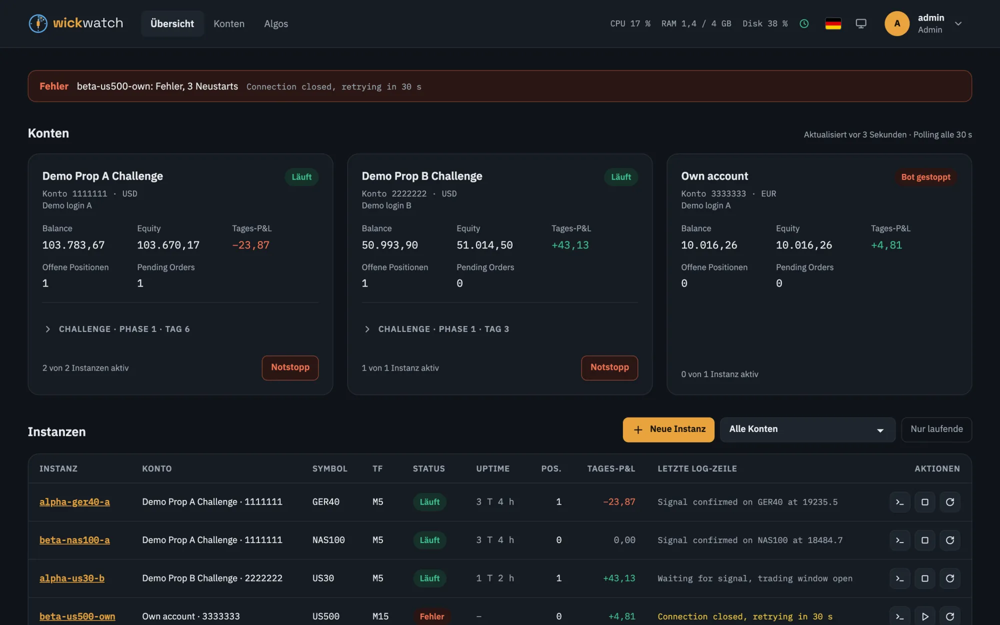
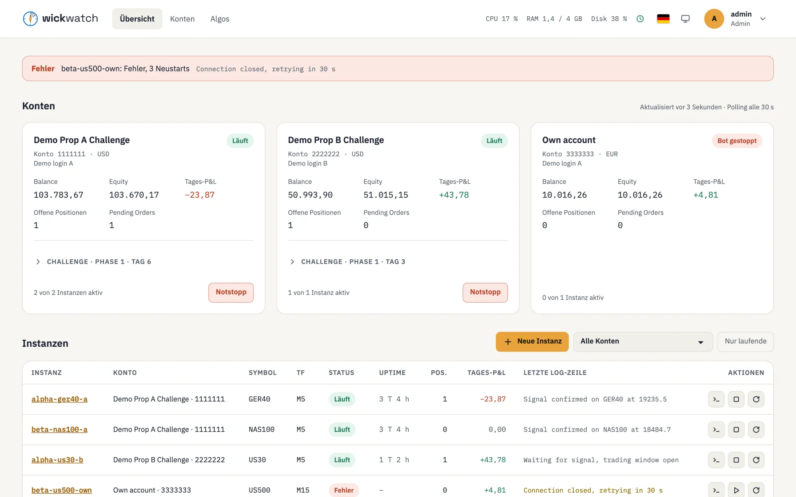
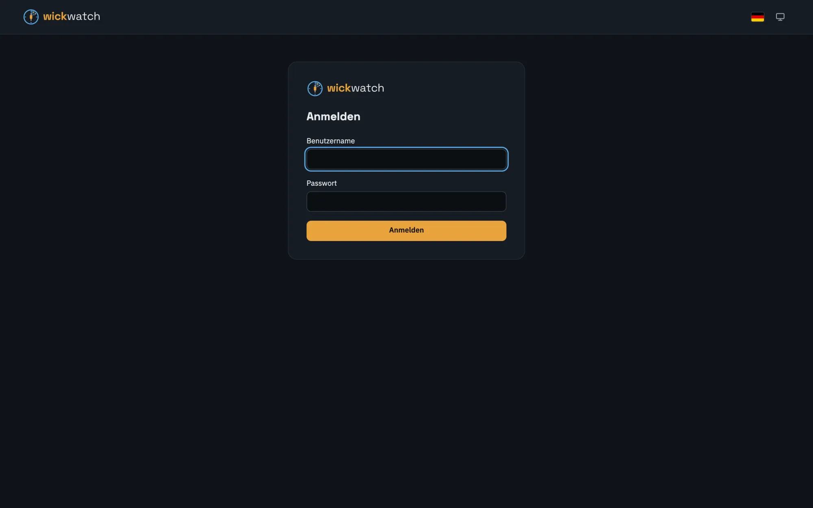
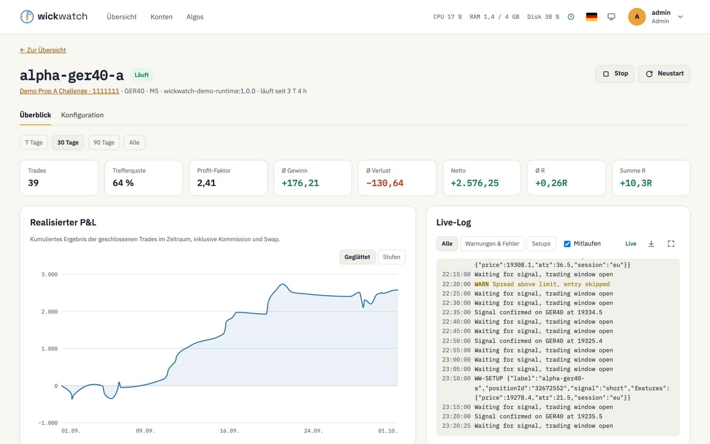
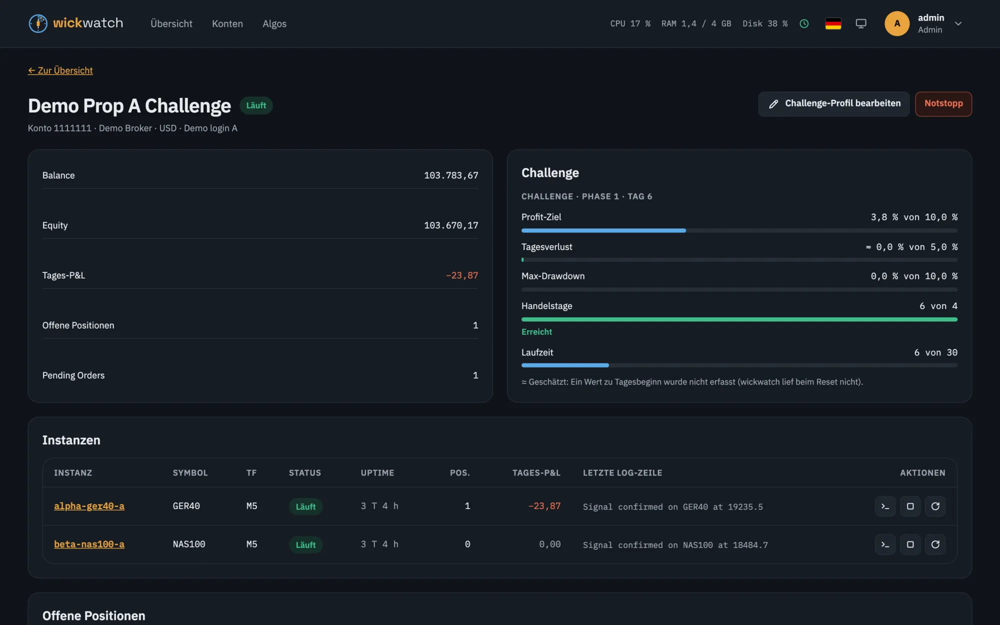
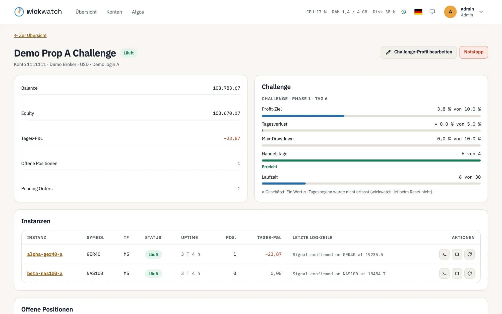
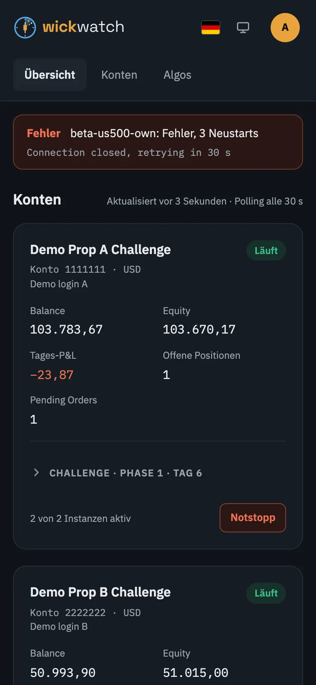
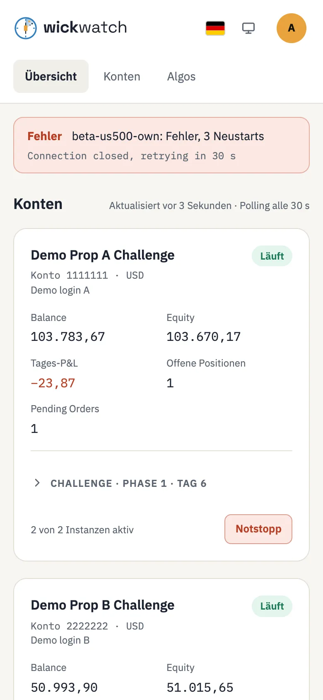

Jede Instanz im Detail
Kennzahlen, realisierte P&L-Kurve und Live-Log nebeneinander; darunter offene Positionen, Pending Orders und die Trade-Historie mit Risiko in % und R pro Trade.
wickwatch ist ein selbst gehostetes Dashboard für Trading-Bots: Sieh, was wo mit welchen Parametern läuft, starte und stoppe Instanzen, verfolge Positionen und Deals live und behalte die Limits deiner Prop-Firm-Challenge im Blick.


Funktionen
wickwatch überwacht und steuert, deine Strategien bleiben deine. Es handelt nicht selbst und verspricht keine Gewinne.
Konten mit Balance, Equity, Tages-P&L, offenen Positionen und Pending Orders. Alle Instanzen mit Status, Laufzeit und letzter Log-Zeile. Meldungen bei gestoppten, abgestürzten oder getrennten Bots, Broker-Fehlern und Challenge-Limits.
Starten, stoppen, neu starten. Bots aus einem hochgeladenen Algo anlegen, mit einem Formular aus dessen Parametern; Parameterdateien laden oder herunterladen. Jedes Speichern ist eine Version, die sich wiederherstellen lässt.
Das Log jedes Bots live verfolgen, in einer größeren Ansicht durchsuchen und die letzten 24 Stunden, 7 Tage oder alles als Textdatei herunterladen.
Ein Knopf pro Konto stoppt dessen Bots, storniert seine Orders und schließt seine Positionen. Immer mit Bestätigung, immer im Audit-Log.
Profit-Ziel, Tagesverlust, Drawdown, Handelstage und Laufzeit pro Konto, mit Vorlagen für FTMO und The Trading Pit. Ein optionaler Schutz löst den Notstopp aus, bevor ein Limit ausgeschöpft ist.
Eingebauter Login mit optionaler Zwei-Faktor-Anmeldung und Nutzern, die nur lesen dürfen. Broker-Zugangsdaten verschlüsselt gespeichert. Docker nur über einen Socket-Proxy.
Kennzahlen, realisierte P&L-Kurve und Live-Log nebeneinander; darunter offene Positionen, Pending Orders und die Trade-Historie mit Risiko in % und R pro Trade.


Die Kontoseite zeigt, wie weit das Profit-Ziel entfernt ist und wie viel vom Tages- und Gesamtverlust schon verbraucht ist. Werte, die nicht genau gemessen werden konnten, sind als Schätzung markiert.


Handy und Benachrichtigungen
Dasselbe Dashboard, für kleine Bildschirme angeordnet: Meldungen zuerst, Konten als Karten, Aktionen unter den Überschriften und mit Beschriftung. Dunkler und heller Modus, Deutsch und Englisch, und eine große Tippfläche für den Notstopp.
Betreibe es hinter deinem Reverse Proxy mit HTTPS (nginx-proxy, Traefik oder ein anderer) und halte es von der Öffentlichkeit fern, z. B. mit VPN oder IP-Freigabeliste.


So funktioniert es
wickwatch kennt weder deine Strategie noch deinen Broker. Adapter verbinden es mit dem Ort, an dem die Bots laufen, mit dem Broker und mit dem Parameterformat. Die ersten betreiben cTrader-Bots in Docker-Containern über die cTrader CLI; ein Demo-Adapter mit Beispieldaten ist eingebaut.
Findet markierte Container, startet und stoppt sie und streamt ihre Logs. Docker wird nur über einen docker-socket-proxy erreicht.
Konten, Kontostände, Positionen, Orders, Deals und Algo-Metadaten, eine Sitzung pro Konto.
Liest und schreibt cTrader-Parameterdateien, damit vorhandene Parametersätze weiter funktionieren.
Ein anderer Broker oder eine andere Plattform? Die Adapter-Verträge stehen in docs/ADAPTERS.md (Englisch).
Schnellstart
Das Image startet mit dem Demo-Adapter: Beispielkonten, -instanzen, -positionen und -logs. So kannst du dich ohne Broker und ohne Bots umsehen.
docker run --rm -p 3000:3000 \
-e MASTER_KEY="$(openssl rand -base64 32)" \
-v wickwatch-data:/app/data \
ghcr.io/wickwatch/wickwatch:0.1.2No admin yet. Open /setup and enter the setup token: … kopieren.http://localhost:3000 öffnen und Token, Benutzernamen und Passwort eingeben.Echte Bots auf einem Server betreiben: die Schritt-für-Schritt-Installation; alle Einstellungen in der Konfigurationsreferenz (beides Englisch). wickwatch 0.1.2 ist in früher Entwicklung und läuft auf Demo- und Prop-Challenge-Konten; was als Nächstes kommt, steht in der Roadmap.
Unterstützen
wickwatch entsteht in der Freizeit und kostet nichts. Wenn es dir hilft, kannst du es über Ko-fi oder GitHub Sponsors unterstützen. Fehlermeldungen, Ideen und Pull Requests helfen genauso.